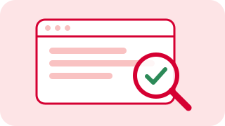

Is this page safe?
Open a website or email, then press the button. We'll look for scam warning signs and explain what we find.
Zero Day only looks at a page when you press this button.
Chrome will ask you to confirm. Zero Day still only looks at a page when you press Analyze.
Threat Assessment
This is a demo result based on simple keywords. The real safety checker isn't connected yet, so don't rely on this percentage.
What we noticed
Tap a finding to see where it is on the page.
What you can do
What does Zero Day look at?
Before a page is checked, Zero Day hides personal details such as email addresses, phone numbers, card numbers and street addresses. It never reads anything you've typed into a form.
Nothing has been scanned yet.
Latest alerts
Scams and security problems that could affect you personally, with simple steps to stay safe.
These are sample alerts so you can see how this page will look. Real alerts will appear here once the news feed is connected.
Done (0)
Tick the box on an alert when you've taken care of it. It moves here. Untick it to bring it back.
Want alerts in your email too?
This is optional. You'll see every alert on this page either way.
Stories from people like you
When something strange happens, it helps to know you're not alone. Read what others have run into, or share your own.
These are sample stories for now. Sharing is saved on this computer only until the community service is connected.